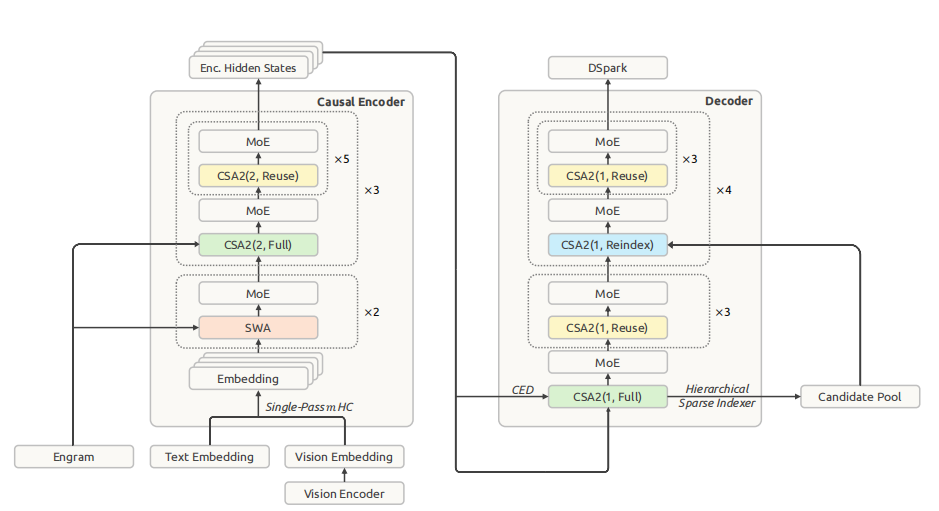

DeepSeek-V4.1-Flash 架构与推理优化¶
本文以官方技术报告、模型 config.json 和 inference/model.py 为主要依据，梳理 DeepSeek-V4.1-Flash 的架构、Prefill/Decode 路径、KV Cache 压缩方式及推理系统取舍。
先抓住一个总纲：
DeepSeek-V4.1-Flash 的核心不是单独某一种 Attention，而是围绕长上下文 Agent 推理，把 Prefill、Decode、KV Cache 三件事联合设计。
最关键的三个结构是：
\[ \boxed{\text{CED：降低 Prefill}} \qquad \boxed{\text{CSA2：降低 Global KV + Attention}} \qquad \boxed{\text{SWA：保留逐层更新的局部状态}} \]
官方模型是 40 层 causal Transformer，前 20 层称 causal encoder，后 20 层称 decoder；backbone 约 552B 参数，Engram 额外约 196B，Prefill 每 token 激活约 8B 参数，Decode 约 16B，并支持最长 1M context。(arXiv)
阅读约定¶
- \(N\)：输入序列长度；\(L=40\)：backbone 总层数；\(w=128\)：SWA 窗口长度；\(K=512\)：Global KV 的 Top-K 选择数。
- Global KV：可跨层复用、面向中远距离检索的压缩 KV；SWA KV：每层独立维护、面向最近 token 的局部 KV。
- 文中的 FLOPs、参数量和 Cache 大小均为结构级近似，用于比较不同路径的增长趋势；具体数值以对应版本的官方配置和实现为准。
1. 先看整张架构图¶

图中标出了 Causal Encoder、Decoder、CSA2 的 Full/Reuse/Reindex、SWA、Engram、CED、Candidate Pool 和 DSpark 的相对位置；下方文字图进一步展开层编号和数据流。
Token Embedding
│
▼
┌──────────────────────────────────────┐
│ Causal Encoder：Layer 0~19 │
│ │
│ L0 SWA │
│ L1 SWA + Engram │
│ │
│ L2 CSA2 ratio=2, Full │
│ L3~7 CSA2 ratio=2, Reuse │
│ │
│ L8 CSA2 ratio=2, Full │
│ L9~13 CSA2 ratio=2, Reuse │
│ │
│ L14 CSA2 ratio=2, Full + Engram │
│ L15~19 CSA2 ratio=2, Reuse │
└──────────────────────────────────────┘
│
│ H20
│
┌────────────┴────────────┐
│ │
│ 生成 Decoder Global KV │
│ │
▼ ▼
┌──────────────────────────────────────┐
│ Decoder：Layer 20~39 │
│ │
│ L20 CSA2 ratio=1, Full │
│ 全局 index + Candidate Pool │
│ │
│ L21~23 Reuse │
│ L24 Reindex │
│ L25~27 Reuse │
│ L28 Reindex │
│ L29~31 Reuse │
│ L32 Reindex │
│ L33~35 Reuse │
│ L36 Reindex │
│ L37~39 Reuse │
│ │
│ 每一层：自己的 Q + 自己的 SWA KV │
└──────────────────────────────────────┘
│
▼
LM Head
│
▼
token
┌─────────────────┐
│ DSpark drafter │
│ speculative │
│ decoding │
└─────────────────┘
这个层分布不是推测，而是能直接从官方 config 读出来：KV source layer 是 {2,8,14,20}，index source 是 {2,8,14,20,24,28,32,36}；前 2 层没有 global compression，Encoder 的 ratio=2，Decoder 的 ratio=1；SWA window=128，global index Top-K=512。(Hugging Face)
2. CED：为什么叫 Causal Encoder-Decoder？¶
这里特别容易误解。
它不是 T5 / Transformer Encoder-Decoder 那种结构：
V4.1 的前 20 层仍然是：
也就是说位置 \(t\) 的 encoder hidden state 只能看到：
不会看到未来 token。
所以本质仍然是一个自回归语言模型，只不过 DeepSeek 把 40 层人为分成：
这样划分的目的主要是省 Prefill。(arXiv)
3. 普通 Transformer 为什么 Prefill 贵？¶
传统 40 层 Transformer，对一个长度为 \(N\) 的 prompt：
所有 \(N\) 个 token 都要完整经过 \(L=40\) 层：
而 Agent 场景特别吃亏。
比如：
输入长度越来越长，而且不停 Prefill。
所以 V4.1 问了一个问题：
后 20 层的历史 KV，真的必须把每个历史 token 再跑一遍后 20 层才能得到吗？
答案是：不一定。
4. CED 最核心的设计：Decoder Global KV 从 Encoder 输出直接生成¶
标准 Transformer：
而第 \(l\) 层 KV 通常来自：
因此，要获得 Layer 35 的 KV，你必须先：
V4.1 改成：
也就是：
不需要把所有历史 token 再经过 Decoder 才能得到 Global KV。(arXiv)
再结合 CSA2 的跨层共享，实际 V4.1 decoder 中甚至只有 Layer 20 是 KV source：
所以 Decoder 20 层共用这一份主要 global memory。
5. 但这里立刻出现一个问题：Decoder 的“深层信息”怎么办？¶
假如完全这么做：
那么 Layer 35 看到的历史 token global KV 也只是基于 H20 产生的。
它没有：
这种深层表示。
这就是为什么 SWA 在 V4.1 里特别重要。
V4.1 没有把 local KV 也共享。
对于每一层：
因此 Layer 35 仍然拥有：
而远距离历史：
因此，三者的关系可以概括为：
这正是 CED 能成立的重要基础。官方也明确强调：global KV 来自 encoder final hidden，而 SWA KV 仍由每一层自己的 hidden state产生。(arXiv)
6. CSA2：真正的 Global Attention 长什么样？¶
这里最好不要简单把 V4.1 说成“MLA”。
它继承了 MLA 的核心思想——用低维 latent KV 代替传统多头 K/V——但完整结构叫：
它同时压缩三个维度：
也就是说：
第一维：每个 KV entry 本身变小¶
传统 MHA：
CSA2 保存的是 compact latent。
官方 config 中：
所以这是 MLA 风格的 latent KV。
7. 第二维：Encoder 每两个 token 再压成一个 Main KV¶
Encoder layer 2~19：
也就是：
并不是简单平均。
官方 Compressor 代码明确是对连续 compress_ratio 个 token 用一个learned softmax gate做 pooling。(Hugging Face)
因此：
Decoder 则：
一个 token 对应一个 global entry。(Hugging Face)
8. 第三维：不同 Layer 不再各自保存 Global KV¶
这是 CSA2 相较早期 CSA 非常核心的地方。
它有三种 mode。
| Mode | Main KV | Indexer | Top-K |
|---|---|---|---|
| Full | 新算 | 新算 | 新选 |
| Reindex | 复用 | 新算 Q | 重新选 Top-K |
| Reuse | 复用 | 不算 | Top-K 也复用 |
所以比如 Encoder：
L2 Full
│
├─ L3 reuse
├─ L4 reuse
├─ L5 reuse
├─ L6 reuse
├─ L7 reuse
│
L8 Full
├─ L9~13 reuse
│
L14 Full
└─ L15~19 reuse
原本 18 层可能意味着：
现在只有：
Decoder 更激进：
因此 Decoder 的 global KV 是高度共享的。(arXiv)
注意即使是 Reuse layer，它仍然会计算：
以及：
复用的只是 global memory 和/或 sparse selection，不是整层 Attention 输出。
9. Sparse Indexer：1M token 不可能全做 Attention¶
即使 KV Cache 压小了，如果每个 Decode token 都去算：
计算量还是随 context 线性增长。
所以 CSA2 先有一个便宜的 Indexer：
配置明确是：
所以最终 global sparse attention 一般只读大约 512 个 Main KV entry。(Hugging Face)
10. Decoder 还进一步用了 Hierarchical Sparse Indexer¶
如果每一层 Indexer 都扫描 1M token：
还是很贵。
于是 Layer 20 先干一件事情：
1M positions
│
Layer20 Indexer
│
block-wise scoring
│
Top 2048 blocks
│
8 positions/block
│
▼
16384 Candidate Pool
因为：
然后：
再分别选自己的：
因此 L24/L28/L32/L36 的 Indexer cost 不再随 1M context 线性增长，而基本由 candidate pool size 决定。(arXiv)
11. 最终 Attention：SWA 和 Global Top-K 是一起算的¶
由此可见，SWA 与 Global Top-K 并不是两次独立的 Attention。
每一层获得：
官方 inference code 真的是：
kv = torch.cat([window_kv, compress_kv], dim=1)
topk_idxs = torch.cat([window_idxs, compress_idxs], dim=-1)
o = sparse_attn(q, kv, ..., topk_idxs, ...)
也就是说，并不是：
而是类似：
一起进入 sparse attention。(Hugging Face)
所以对于一个 Decode token，粗略可以想成：
Q_l
│
┌───────────┴───────────┐
│ │
last 128 Global
SWA KV Top-512
│ │
└──────────┬────────────┘
│
concatenate
│
Attention
│
output
这就是：
12. Q 本身也是 Low-Rank 的¶
V4.1 仍然沿用了类似 MLA 的 low-rank query projection。
官方 config：
所以不是直接：
而是：
官方代码就是：
然后 reshape 到 multi-head。(Hugging Face)
Output projection 也用了 grouped low-rank projection，config 中：
所以 Attention 的 Q/O 两边都在压低投影成本。
13. 每层后面还是 DeepSeekMoE¶
Attention 完以后进入 MoE FFN。
V4.1 每个 backbone MoE 层有：
每个 token 选：
同时还有：
所以一个 token 实际上走：
token
│
Gate
│
┌────────────┴────────────┐
│ │
Top-6 / 384 Shared Expert
│ │
└────────────┬────────────┘
│
sum
expert 内部仍然是 SwiGLU FFN。官方实现也直接写明是“Top-k routed experts plus one shared expert”。(Hugging Face)
所以 552B backbone 很大，但每个 token 并不会激活 552B。
14. Single-Pass mHC：它甚至不是普通的一条 residual stream¶
这是 V4 系列比较特殊的部分。
普通 Transformer：
mHC（Manifold-Constrained Hyper-Connections）不是维护一条 residual，而是维护多条 residual stream。
V4.1 config：
所以可以粗略理解：
进入 Attention / FFN 前先通过学习出的系数进行 mixing：
输出以后再通过 \(B,C\) 混回 residual streams。
Single-Pass 的改进主要不是“增强模型能力”，而是把 mixing coefficient 从本 block 移成 previous block 产生，打断 kernel dependency：
于是 residual update、input mixing、系数预测能塞进 Mega-mHC fused kernel，官方给出的结果是相比原实现将 activation memory traffic 大约减半。(arXiv)
从 Infra 视角，这个设计很值得关注：它实际上是在为了 kernel fusion 改网络数据依赖。
15. Engram：196B 参数为什么不会把推理算爆？¶
V4.1 有一个很大的：
Engram memory。
但是它不是另一套 196B Transformer。
它更像一种：
位置在：
它基于 token n-gram：
通过 hashing 查 embedding table：
因此它把：
“记忆大量固定模式/知识”
和：
“用 Transformer 做复杂计算”
分开。
196B 参数主要是巨大的稀疏 lookup memory，并不是每 token 全部 matmul。官方还专门设计了 host memory + RDMA background prefetch，因为地址是确定的，可以提前知道需要查哪几个 embedding。(arXiv)
这个思路和 MoE 又不同：
16. 一次 Prefill 的执行路径¶
假设 prompt 长度：
传统 40 层：
而 V4.1：
100K prompt
│
▼
Encoder Layer 0~19
│
全部执行
│
▼
H20
│
┌───────────┴─────────────┐
│ │
Encoder Global KV Decoder Global KV
│ 直接由 H20 生成
│ │
└───────────┬─────────────┘
│
Global cache ready
关键在于：
绝大多数 prompt token 不需要跑完整 Decoder 20 层。
但是还有一个问题：
Decoder 的 SWA 是逐层 fresh 的。
因此第一步 decode 时，L39 需要：
这些 KV 不可能直接由 H20 投影得到。
怎么办？
17. Decoder SWA Bounded Replay¶
答案是：
因此 Prefill 实际流程：
N tokens
│
┌────────▼────────┐
│ Encoder 20层 │
│ 全 N tokens │
└────────┬────────┘
│ H20
│
Global KV 已经 ready
│
│ 只取最后128个
▼
┌─────────────────┐
│ Decoder 20层 │
│ only 128 tokens │
└─────────────────┘
│
▼
Decoder SWA KV ready
所以复杂度从传统：
变成：
由于：
所以：
这就是所谓：
这是“Prefill 激活参数量约 8B、Decode 激活参数量约 16B”的结构原因；它不是对端到端延迟的直接估计。官方报告也给出了对应的复杂度分析。(arXiv)
18. Decode 阶段：每个新 token 都跑 40 层¶
现在开始生成 token \(t\)。
首先：
Decode 时一个 token 会经过完整 40 层。
因为当前 token 需要真正获得：
因此 Decode 激活约 16B 参数/token，而不是 Prefill 的 8B。(arXiv)
19. 具体追踪一个 Decode token¶
这部分最能把整个架构串起来。
假设现在生成 token \(t\)。
Layer 0¶
只做：
没有 Global CSA2。
然后 MoE。
Layer 1¶
仍然：
然后还会访问：
再 MoE。
Layer 2：Full CSA2¶
当前 hidden：
首先生成：
还生成这一层自己的：
加入 SWA ring buffer：
与此同时 Layer2 是：
所以每积累两个 token，会形成一个新的 compressed Main KV entry。官方 compressor 在 decode 时甚至会把未凑满的一组暂存在 state 中，只有每两个 token 才产出一个 latent。(Hugging Face)
然后 Layer2 indexer：
最后 Attention：
Layer 3~7¶
这些是 Reuse：
这个区别非常重要：
它仍然是新的 Transformer Layer，只是重复使用 global memory 和 retrieval result。
Layer 8¶
重新 Full：
再供 L9~13 使用。
Layer14 同理。
20. Layer 20：CED 的关键切换¶
经过 Encoder L0~19 后，当前 token 得到：
这个东西非常重要，因为它不仅是 Decoder 的输入，同时是：
Layer20：
由于 decoder：
因此每生成一个 token 都增加一个 Main KV entry。
而这份 Main KV 会给：
共同使用。(Hugging Face)
21. Layer 20：Decoder Global Retrieval 的第一阶段检索器¶
Layer20 对所有可见 global Main KV 做 indexing：
entire context
│
Layer20 indexer
/ \
Top512 block TopK
│ │
自己做Attention 2048 × 8
│
▼
16384 candidates
因此它同时产生：
和：
22. Layer 21~23：Reuse¶
非常便宜：
23. Layer 24：Reindex¶
Layer24 不重新造 global KV。
它有：
但是它认为：
Layer24 的 Q 已经比 L20 深了不少，我可能想看不同的历史 token。
所以：
于是：
之后 L25~27 又复用它。
然后：
这就在：
“每层都重新检索，太贵”
和：
“所有层完全看一样的历史，表达力差”
之间做了折中。
24. Decode Attention 的计算量为何对 Context Length 不敏感？¶
到了 1M context，Main Attention 实际参与计算的 Global KV 仍然大致是：
再加上局部窗口：
因此核心 Attention 的读取规模近似为：
不是：
只有 Layer20 Full indexer 仍然需要看全局；之后几个 Reindex 只看约 16K candidate。因此官方报告称从 4K 增大到 1M、context 扩大 256 倍时，single-token decode FLOPs 只增加约 ¼，而不是同比增加。(arXiv)
25. KV Cache 如何压到约 890 bytes/token？¶
这不是单个技巧造成的，而是几层乘法。
首先：
MLA-like latent¶
每个 token 不保存所有 head 的传统 K/V。
↓
Sequence compression¶
Encoder：
↓
Cross-layer reuse¶
不是 40 层都保存一份 global KV。
↓
Sparse index¶
Attention 只真正读少量 selected KV。
↓
FP4 Main KV¶
Main KV Cache 用 FP4 存。
官方使用接近 NVFP4 的方案：
最终 global KV footprint：
约为 DeepSeek-V4-Flash 的 ¼。(arXiv)
注意：
但是：
官方 inference code 也能看到 SWA cache 保持 FP8，因为局部 KV 对量化精度更敏感。(Hugging Face)
26. Prefix Cache 命中时如何处理？¶
这其实对于 Agent Infra 特别有意思。
假如：
Global KV 可以长期保存。
但是 V4.1 不再把 SWA KV 长期持久化到 SSD。
因为 SWA 只需要最后 128 token，而且它生命周期非常短。
所以：
如果 SWA DRAM cache 也 miss 了：
而不是把整个 prefix 重算。(arXiv)
这就是 SWA Bounded Replay。
它让 persistent KV footprint 又降低到 V4 的约：
27. DSpark：Decode 不一定一次只生成 1 token¶
以上描述的是 target model 的基本自回归路径。
实际 serving 还会用：
它有额外的 3 个轻量 Transformer blocks，SWA window 同样是 128。
一次 forward 会并行预测：
可以简单想：
然后用 confidence head 估计这些 draft 被 target model 接受的概率，再动态决定一次验证几个 token。(arXiv)
所以真实 serving 更接近：
Target model
│
├── hidden L37
├── hidden L38
└── hidden L39
│
▼
DSpark
│
draft <= 5 tokens
│
▼
Target verification
│
accept prefix
│
▼
continue
它代替了早期 DeepSeek 中类似 MTP 的角色。
28. 多模态输入路径¶
如果输入图片：
Image
↓
DeepSeek-ViT
↓
spatial features
↓
3×3 Pixel Unshuffle
↓
token 数减少 9 倍
↓
2-layer MLP projector
↓
5120-d visual embedding
↓
与 Text Embedding 插在同一个序列
↓
40-layer language backbone
Vision Encoder 是 32 层、hidden size 1024、16 heads，使用 2D-RoPE；3×3 downsample 把视觉 token 数减少 9 倍。(arXiv)
所以 V4.1 并不是“外挂 VLM adapter”，而是原生 multimodal pretraining 的统一 backbone。
29. 一次完整推理流程¶
下面这张图概括了最重要的执行路径：
PROMPT
│
┌─────────┴─────────┐
│ │
Text Image
│ │
Embedding DeepSeek-ViT
│ │
│ Pixel-Unshuffle
│ │
└─────────┬─────────┘
▼
Unified Sequence
│
╔════════ PREFILL ════════╗
│
Encoder L0~19
全 prompt 执行
│
H20
┌───────────┴───────────┐
│ │
Encoder Global KV Decoder Global KV
│ │
└───────────┬───────────┘
│
last 128 tokens
│
Decoder L20~39
Bounded Replay
│
▼
SWA state ready
╚═══════════════════════════╝
│
╔════════ DECODE ══════════╗
│
new token
│
Encoder L0~19
│
┌─────────────┴─────────────┐
│ │
Local SWA Global CSA2
fresh/layer sparse/shared
│ │
└─────────────┬─────────────┘
│
Decoder L20~39
│
┌─────────┴─────────┐
│ │
SWA128 Global Top512
│ │
└──── concatenate ──┘
│
Attention
│
MoE
│
logits
│
DSpark
│
draft + verify
╚═══════════════════════════╝
30. 从推理系统设计角度总结 V4.1¶
V4.1 不是单纯把某个 kernel 做快，而是在不同时间尺度的信息上使用不同存储/计算策略：
| 信息类型 | 典型范围 | V4.1 的处理 |
|---|---|---|
| 极近局部信息 | 128 token | 每层 fresh SWA |
| 中远程语义信息 | 数 K～1M | CSA2 sparse retrieval |
| 跨层重复信息 | 多层 | Global KV / Top-K reuse |
| 固定模式/知识 | 超长期参数记忆 | Engram |
| 历史 Prompt | 多轮 session | Persistent Global KV |
| 短期 SWA 状态 | 当前 session | DRAM / Bounded Replay |
| 未来几个 token | 1～5 token | DSpark speculation |
因此可以把它概括成一句：
它分别问：
- Prompt 历史真的需要跑 40 层吗？ → CED：不用，绝大部分只跑 20 层。
- 每层真的都需要自己的 Global KV 吗？ → CSA2：不用，跨层共享。
- 每层真的都需要重新选历史 token 吗？ → Reuse/Reindex。
- 1M 个历史 token 都值得 Attention 吗？ → Top-512。
- 每个 Indexer 都值得搜 1M 吗？ → Hierarchical 16K candidate。
- 局部 token 也能跟着 Global 一起共享吗？ → 不行，所以保留 fresh SWA。
- SWA 值得长期存在 SSD 吗？ → 不值得，Bounded Replay。
- 知识都值得放 Transformer FFN 里计算吗？ → 不一定，Engram。
- Decode 真要一次一个 token 吗？ → DSpark 一次 draft 多个。
从推理系统角度看，V4.1 不再把 KV Cache 视为一个统一对象，而是按照生命周期、语义粒度、数值精度和存储层级进行分层管理。(arXiv)
后续如果需要继续深入，可以沿着一次 Decode 的 Tensor Shape 和 KV Cache 大小展开，从 hidden=5120 → q_lora=1280 → 64×512 Q → SWA128 + CSA2 Top512 → grouped O projection 逐步计算显存与 FLOPs。